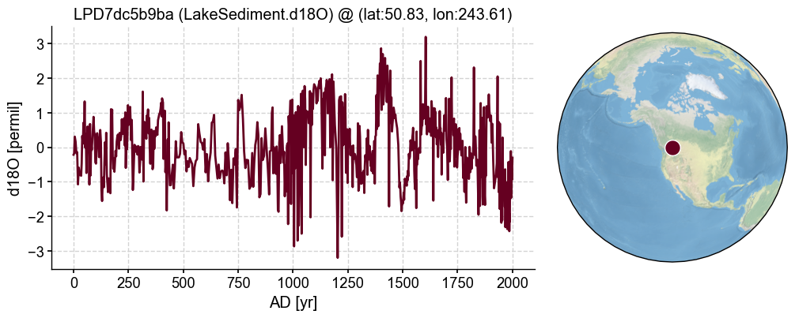
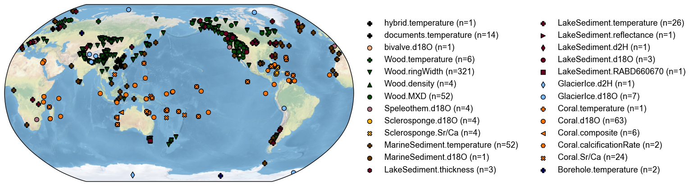
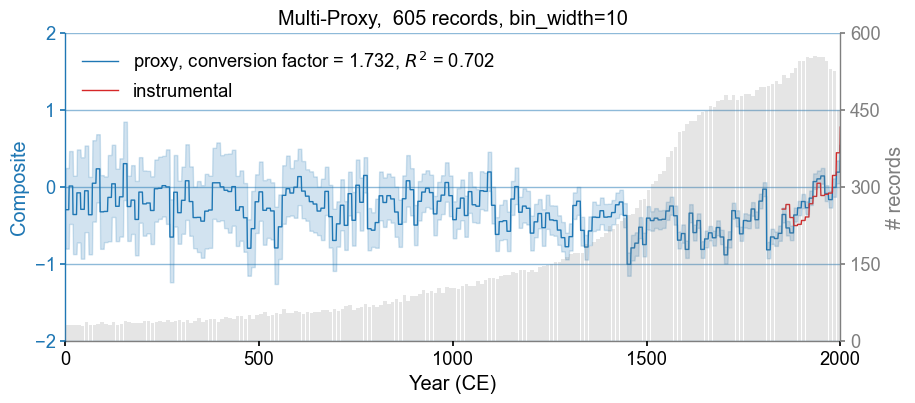

ClimateDISK: Hockey stick#
This notebook attempts to follow the WINGS steps necessary to reproduce the hockey stick figure (and allow for upgrades as new data becomes available).
Let’s first import our favorite packages:
import json
import requests
import pandas as pd
import io
import ast
import numpy as np
import pyleoclim as pyleo
import seaborn as sns
import cfr as cfr
Step 1: Data query#
For now let’s query the LiPDverse v3 graph directly. For ClimateDisk, we may need to return the datasets URL, send the datasets to WINGS and use PyLiPD in the first component to produce the DataFrame.
url = 'https://linkedearth.graphdb.mint.isi.edu/repositories/LiPDVerse3'
query = """PREFIX le: <http://linked.earth/ontology#>
PREFIX wgs84: <http://www.w3.org/2003/01/geo/wgs84_pos#>
SELECT ?dataSetName ?archiveType ?geo_meanLat ?geo_meanLon ?geo_meanElev
?paleoData_variableName ?paleoData_values ?paleoData_units
?paleoData_proxy ?paleoData_proxyGeneral ?time_variableName ?time_values
?time_units ?compilationName ?TSID ?QAlabel where{
?ds a le:Dataset .
?ds le:name ?dataSetName .
OPTIONAL{?ds le:proxyArchiveType ?archiveType .}
?ds le:collectedFrom ?loc .
?loc wgs84:lat ?geo_meanLat .
?loc wgs84:long ?geo_meanLon .
OPTIONAL {?loc wgs84:alt ?geo_meanElev .}
?ds le:includesPaleoData ?data .
?data le:foundInMeasurementTable ?table .
?table le:includesVariable ?var .
?var le:name ?paleoData_variableName .
?var le:hasValues ?paleoData_values .
OPTIONAL{?var le:hasUnits ?paleoData_units .}
OPTIONAL{?var le:proxy ?paleoData_proxy .}
OPTIONAL{?var le:proxyGeneral ?paleoData_proxyGeneral .}
?var le:partOfCompilation ?compilation .
?compilation le:name ?compilationName .
VALUES ?compilationName {"iso2k" "Pages2kTemperature"} .
?var le:useInGlobalTemperatureAnalysis ?QAlabel .
FILTER (?QAlabel = True || regex(?QAlabel, "True.*", "i")) .
OPTIONAL{?var le:hasVariableID ?TSID} .
?table le:includesVariable ?timevar .
?timevar le:name ?time_variableName .
FILTER (regex(?time_variableName, "year.*")).
?timevar le:hasValues ?time_values .
OPTIONAL{?timevar le:hasUnits ?time_units .}
}"""
response = requests.post(url, data = {'query': query})
data = io.StringIO(response.text)
df = pd.read_csv(data, sep=",")
df['paleoData_values']=df['paleoData_values'].apply(lambda row : json.loads(row) if isinstance(row, str) else row)
df['time_values']=df['time_values'].apply(lambda row : json.loads(row) if isinstance(row, str) else row)
df.head()
| dataSetName | archiveType | geo_meanLat | geo_meanLon | geo_meanElev | paleoData_variableName | paleoData_values | paleoData_units | paleoData_proxy | paleoData_proxyGeneral | time_variableName | time_values | time_units | compilationName | TSID | QAlabel | |
|---|---|---|---|---|---|---|---|---|---|---|---|---|---|---|---|---|
| 0 | LS16STCL | LakeSediment | 50.830 | -116.39 | 1126.0 | d18O | [-7.81, -5.91, -9.03, -5.35, -5.61, -5.98, -5.... | permil | d18O | NaN | year | [2009.0, 2008.3, 2007.8, 2007.4, 2007.0, 2006.... | AD | iso2k | LPD7dc5b9ba | True |
| 1 | CO00URMA | Coral | 0.933 | 173.00 | 6.0 | d18O | [-4.8011, -4.725, -4.6994, -4.86, -5.0886, -5.... | permil | d18O | NaN | year | [1994.5, 1994.33, 1994.17, 1994.0, 1993.83, 19... | AD | iso2k | Ocean2kHR_177 | True |
| 2 | CO00URMA | Coral | 0.933 | 173.00 | 6.0 | d18O | [-4.8011, -4.725, -4.6994, -4.86, -5.0886, -5.... | permil | d18O | NaN | year | [1994.5, 1994.33, 1994.17, 1994.0, 1993.83, 19... | AD | iso2k | Ocean2kHR_177 | True |
| 3 | CO00URMA | Coral | 0.933 | 173.00 | 6.0 | d18O | [-4.8011, -4.725, -4.6994, -4.86, -5.0886, -5.... | permil | d18O | NaN | year | [1994.5, 1994.33, 1994.17, 1994.0, 1993.83, 19... | AD | iso2k | Ocean2kHR_177 | True |
| 4 | CO05KUBE | Coral | 32.467 | -64.70 | -12.0 | d18O | [-4.15, -3.66, -3.69, -4.07, -3.95, -4.12, -3.... | permil | d18O | NaN | year | [1983.21, 1983.13, 1983.04, 1982.96, 1982.88, ... | AD | iso2k | Ocean2kHR_105 | True |
"The number of records is "+str(len(df.index))
'The number of records is 656'
df['QAlabel'].unique()
array([ True])
df.columns
Index(['dataSetName', 'archiveType', 'geo_meanLat', 'geo_meanLon',
'geo_meanElev', 'paleoData_variableName', 'paleoData_values',
'paleoData_units', 'paleoData_proxy', 'paleoData_proxyGeneral',
'time_variableName', 'time_values', 'time_units', 'compilationName',
'TSID'],
dtype='object')
Step 2: Remove duplicate rows#
To be considered a duplicate:
Have the same
TSIDHave the same
paleoData_variableNameHave the same
paleoData_valuesHave the same
time_values
def is_duplicate(row1,row2):
if row1['TSID']==row2['TSID']:
if row1['paleoData_variableName']==row2['paleoData_variableName']:
if len(row1['paleoData_values']) != len(row2['paleoData_values']):
equal=False
else:
if np.allclose(row1['paleoData_values'], row2['paleoData_values'], atol=0.001)==True:
if len(row1['time_values']) != len(row2['time_values']):
equal=False
else:
if np.allclose(row1['time_values'], row2['time_values'], atol=0.001)==True:
equal = True
else: equal=False
else:
equal=False
else:
equal=False
else:
equal = False
return equal
tsid = df['TSID'].unique()
idx_list = []
for item in tsid:
df1=df[df['TSID']==item]
if len(df1.index)>1:
comp = df1.iloc[0]
df2 = df1.iloc[1:]
for index, row in df2.iterrows():
if is_duplicate(comp,row)==True:
idx_list.append(index)
df_nodup = df.drop(idx_list)
"There is now "+ str(len(df_nodup.index)) + " timeseries available."
'There is now 612 timeseries available.'
df_nodup.columns
Index(['dataSetName', 'archiveType', 'geo_meanLat', 'geo_meanLon',
'geo_meanElev', 'paleoData_variableName', 'paleoData_values',
'paleoData_units', 'paleoData_proxy', 'paleoData_proxyGeneral',
'time_variableName', 'time_values', 'time_units', 'compilationName',
'TSID'],
dtype='object')
df_metadata = df_nodup.filter(['dataSetName','archiveType','geo_meanLat', 'geo_meanLon', 'geo_meanElev','paleoData_variableName','paleoData_units','paleoData_proxy','paleoData_proxyGeneral','time_variableName',' time_units','compilationName','TSID'])
df_metadata.columns
Index(['dataSetName', 'archiveType', 'geo_meanLat', 'geo_meanLon',
'geo_meanElev', 'paleoData_variableName', 'paleoData_units',
'paleoData_proxy', 'paleoData_proxyGeneral', 'time_variableName',
'compilationName', 'TSID'],
dtype='object')
df_metadata.to_csv('metadata.csv')
Step 4: Slice for the time frame of interest#
We can use Pyleoclim to do this for us
time_slice = []
value_slice = []
for _,row in df_nodup.iterrows():
ts=pyleo.Series(time = row['time_values'],
value = row ['paleoData_values'],
time_name = row ['time_variableName'],
time_unit = row ['time_units'],
value_name = row ['paleoData_variableName'],
value_unit = row['paleoData_units'], verbose=False)
ts_slice = ts.slice([0,2000])
time_slice.append(ts_slice.time)
value_slice.append(ts_slice.value)
df_nodup['time_values_slice']=time_slice
df_nodup['paleoData_values_slice'] = value_slice
df_nodup.head()
| dataSetName | archiveType | geo_meanLat | geo_meanLon | geo_meanElev | paleoData_variableName | paleoData_values | paleoData_units | paleoData_proxy | paleoData_proxyGeneral | time_variableName | time_values | time_units | compilationName | TSID | time_values_slice | paleoData_values_slice | |
|---|---|---|---|---|---|---|---|---|---|---|---|---|---|---|---|---|---|
| 0 | LS16STCL | LakeSediment | 50.8300 | -116.3900 | 1126.0 | d18O | [-7.81, -5.91, -9.03, -5.35, -5.61, -5.98, -5.... | permil | d18O | NaN | year | [2009.0, 2008.3, 2007.8, 2007.4, 2007.0, 2006.... | AD | iso2k | LPD7dc5b9ba | [0.299999999999955, 2.90000000000009, 5.700000... | [-5.36, -5.34, -5.12, -5.19, -5.34, -5.32, -6.... |
| 1 | CO00URMA | Coral | 0.9330 | 173.0000 | 6.0 | d18O | [-4.8011, -4.725, -4.6994, -4.86, -5.0886, -5.... | permil | d18O | NaN | year | [1994.5, 1994.33, 1994.17, 1994.0, 1993.83, 19... | AD | iso2k | Ocean2kHR_177 | [1840.0, 1840.17, 1840.33, 1840.5, 1840.67, 18... | [-4.6914, -4.7834, -4.5927, -4.3615, -4.315, -... |
| 4 | CO05KUBE | Coral | 32.4670 | -64.7000 | -12.0 | d18O | [-4.15, -3.66, -3.69, -4.07, -3.95, -4.12, -3.... | permil | d18O | NaN | year | [1983.21, 1983.13, 1983.04, 1982.96, 1982.88, ... | AD | iso2k | Ocean2kHR_105 | [1825.21, 1825.29, 1825.38, 1825.46, 1825.54, ... | [-3.1, -3.2, -3.37, -3.79, -3.94, -3.88, -3.74... |
| 5 | IC13THQU | GlacierIce | -13.9333 | -70.8333 | 5670.0 | d18O | [-18.5905, -16.3244, -16.2324, -17.0112, -18.6... | permil | d18O | NaN | year | [2009, 2008, 2007, 2006, 2005, 2004, 2003, 200... | AD | iso2k | SAm_035 | [226.0, 227.0, 228.0, 229.0, 230.0, 231.0, 232... | [-18.12, -17.48, -17.33, -17.84, -18.45, -18.8... |
| 6 | CO01TUNG | Coral | -5.2170 | 145.8170 | -3.0 | d18O | [-4.827, -4.786, -4.693, -4.852, -4.991, -4.90... | permil | d18O | NaN | year | [1993.042, 1992.792, 1992.542, 1992.292, 1992.... | AD | iso2k | Ocean2kHR_140 | [1880.792, 1881.042, 1881.292, 1881.542, 1881.... | [-4.801, -4.94, -4.906, -4.792, -4.923, -5.023... |
Step 4: Gaussianize#
Let’s have Pyleoclim help us with that
value_gaussianize = []
for _,row in df_nodup.iterrows():
ts=pyleo.Series(time = row['time_values_slice'],
value = row ['paleoData_values_slice'],
time_name = row ['time_variableName'],
time_unit = row ['time_units'],
value_name = row ['paleoData_variableName'],
value_unit = row['paleoData_units'], verbose=False)
ts_g = ts.gaussianize()
value_gaussianize.append(ts_g.value)
df_nodup['paleoData_values_slice_gauss'] = value_gaussianize
df_nodup.head()
| dataSetName | archiveType | geo_meanLat | geo_meanLon | geo_meanElev | paleoData_variableName | paleoData_values | paleoData_units | paleoData_proxy | paleoData_proxyGeneral | time_variableName | time_values | time_units | compilationName | TSID | time_values_slice | paleoData_values_slice | paleoData_values_slice_gauss | |
|---|---|---|---|---|---|---|---|---|---|---|---|---|---|---|---|---|---|---|
| 0 | LS16STCL | LakeSediment | 50.8300 | -116.3900 | 1126.0 | d18O | [-7.81, -5.91, -9.03, -5.35, -5.61, -5.98, -5.... | permil | d18O | NaN | year | [2009.0, 2008.3, 2007.8, 2007.4, 2007.0, 2006.... | AD | iso2k | LPD7dc5b9ba | [0.299999999999955, 2.90000000000009, 5.700000... | [-5.36, -5.34, -5.12, -5.19, -5.34, -5.32, -6.... | [-0.2130875894530718, -0.17422655914690632, 0.... |
| 1 | CO00URMA | Coral | 0.9330 | 173.0000 | 6.0 | d18O | [-4.8011, -4.725, -4.6994, -4.86, -5.0886, -5.... | permil | d18O | NaN | year | [1994.5, 1994.33, 1994.17, 1994.0, 1993.83, 19... | AD | iso2k | Ocean2kHR_177 | [1840.0, 1840.17, 1840.33, 1840.5, 1840.67, 18... | [-4.6914, -4.7834, -4.5927, -4.3615, -4.315, -... | [-0.9811705980359124, -1.2651460843379647, -0.... |
| 4 | CO05KUBE | Coral | 32.4670 | -64.7000 | -12.0 | d18O | [-4.15, -3.66, -3.69, -4.07, -3.95, -4.12, -3.... | permil | d18O | NaN | year | [1983.21, 1983.13, 1983.04, 1982.96, 1982.88, ... | AD | iso2k | Ocean2kHR_105 | [1825.21, 1825.29, 1825.38, 1825.46, 1825.54, ... | [-3.1, -3.2, -3.37, -3.79, -3.94, -3.88, -3.74... | [1.328615981030611, 0.9458448462285661, 0.4131... |
| 5 | IC13THQU | GlacierIce | -13.9333 | -70.8333 | 5670.0 | d18O | [-18.5905, -16.3244, -16.2324, -17.0112, -18.6... | permil | d18O | NaN | year | [2009, 2008, 2007, 2006, 2005, 2004, 2003, 200... | AD | iso2k | SAm_035 | [226.0, 227.0, 228.0, 229.0, 230.0, 231.0, 232... | [-18.12, -17.48, -17.33, -17.84, -18.45, -18.8... | [-0.24533483270695292, 0.3501885714345531, 0.5... |
| 6 | CO01TUNG | Coral | -5.2170 | 145.8170 | -3.0 | d18O | [-4.827, -4.786, -4.693, -4.852, -4.991, -4.90... | permil | d18O | NaN | year | [1993.042, 1992.792, 1992.542, 1992.292, 1992.... | AD | iso2k | Ocean2kHR_140 | [1880.792, 1881.042, 1881.292, 1881.542, 1881.... | [-4.801, -4.94, -4.906, -4.792, -4.923, -5.023... | [0.7315480859971977, 0.03064136195287292, 0.21... |
Step 5: Create the composite#
Step 5a: Clean up the proxy/variable names#
temp = df_nodup[['archiveType','paleoData_variableName']]
temp.groupby(['archiveType','paleoData_variableName'], as_index=False).value_counts()
| archiveType | paleoData_variableName | count | |
|---|---|---|---|
| 0 | Coral | d18O | 45 |
| 1 | GlacierIce | d18O | 1 |
| 2 | LakeSediment | d18O | 3 |
| 3 | LakeSediment | d2H | 1 |
| 4 | Sclerosponge | d18O | 3 |
| 5 | bivalve | d18O | 1 |
| 6 | borehole | temperature | 2 |
| 7 | coral | Sr_Ca | 24 |
| 8 | coral | calcification | 2 |
| 9 | coral | composite | 6 |
| 10 | coral | d18O | 23 |
| 11 | coral | temperature | 1 |
| 12 | documents | temperature | 14 |
| 13 | glacier ice | d18O | 6 |
| 14 | glacier ice | dD | 1 |
| 15 | hybrid | temperature | 1 |
| 16 | lake sediment | RABD660_670 | 1 |
| 17 | lake sediment | X_radiograph_dark_layer | 1 |
| 18 | lake sediment | temperature | 26 |
| 19 | lake sediment | thickness | 3 |
| 20 | marine sediment | d18O | 1 |
| 21 | marine sediment | temperature | 52 |
| 22 | sclerosponge | Sr_Ca | 4 |
| 23 | sclerosponge | d18O | 3 |
| 24 | speleothem | d18O | 4 |
| 25 | tree | MXD | 52 |
| 26 | tree | density | 4 |
| 27 | tree | temperature | 6 |
| 28 | tree | trsgi | 321 |
Get the standard archive and variable names:
archive_std = pd.read_csv('archiveType.csv')
df_archive = archive_std[['lipdName','synonym']].reset_index()
syn = []
for _,row in df_archive.iterrows():
syn.append(row['synonym'].lower().replace(' ',""))
df_archive['synonym_reg']=syn
var_std=pd.read_csv('paleoData_variableName.csv')
df_var = var_std[['lipdName','synonym']].reset_index()
syn_var=[]
for _,row in df_var.iterrows():
try:
syn_var.append(row['synonym'].lower().replace(' ',"").replace('/',"").replace('_',""))
except:
syn_var.append(row['synonym'])
df_var['synonym_reg']=syn_var
#let's do the archive first
archiveType_lipd = []
for _, row in df_nodup.iterrows():
match = row['archiveType'].lower().replace(' ',"").replace('/',"").replace('_',"")
f = df_archive[df_archive['synonym_reg']==match]
if type(f) == pd.core.frame.DataFrame and not f.empty:
archiveType_lipd.append(f['lipdName'].iloc[0])
elif type(f) == pd.core.series.Series:
archiveType_lipd.append(f['lipdName'])
else:
archiveType_lipd.append(row['archiveType'])
#let's work on varname
variableName = []
for _, row in df_nodup.iterrows():
match = row['paleoData_variableName'].lower().replace(' ',"").replace('/',"").replace('_',"")
f = df_var[df_var['synonym_reg']==match]
if type(f) == pd.core.frame.DataFrame and not f.empty:
variableName.append(f['lipdName'].iloc[0])
elif type(f) == pd.core.series.Series:
variableName.append(f['lipdName'])
else:
variableName.append(row['archiveType'])
ptype = []
for idx,item in enumerate(variableName):
ptype.append(archiveType_lipd[idx]+'.'+item)
Put it in our DataFrame:
df_nodup['ptype']=ptype
Step 5b: Set the style for the figures#
colors_dict = {}
for idx, item in enumerate(set(ptype)):
if 'marinesediment' in item.lower():
colors_dict[item] = sns.xkcd_rgb['brown']
elif 'lakesediment' in item.lower():
colors_dict[item]= sns.xkcd_rgb['maroon']
elif 'coral' in item.lower():
colors_dict[item]= sns.xkcd_rgb['orange']
elif 'ice' in item.lower():
colors_dict[item]= sns.xkcd_rgb['sky blue']
elif 'borehole' in item.lower():
colors_dict[item]= sns.xkcd_rgb['dark blue']
elif 'sclerosponge' in item.lower():
colors_dict[item]= sns.xkcd_rgb['amber']
elif 'speleothem' in item.lower():
colors_dict[item]= sns.xkcd_rgb['mauve']
elif 'wood' in item.lower():
colors_dict[item]= sns.xkcd_rgb['forest green']
elif 'bivalve' in item.lower():
colors_dict[item]= sns.xkcd_rgb['peach']
else:
colors_dict[item]= 'k'
markers_dict = {}
for idx, item in enumerate(set(ptype)):
if 'temperature' in item.lower():
markers_dict[item] = 'P'
elif 'srca' in item.lower().replace('/',''):
markers_dict[item]= 'X'
elif 'd18o' in item.lower():
markers_dict[item] = 'o'
elif 'calcification' in item.lower():
markers_dict[item] = 'H'
elif 'composite' in item.lower():
markers_dict[item] = '<'
elif 'd2h' in item.lower():
markers_dict[item] = 'd'
elif 'reflectance' in item.lower():
markers_dict[item] = '>'
elif 'thickness' in item.lower():
markers_dict[item] = 'h'
elif 'mxd' in item.lower():
markers_dict[item] = '8'
elif 'density' in item.lower():
markers_dict[item] = '^'
elif 'width' in item.lower():
markers_dict[item] = 'v'
else:
markers_dict[item] = 's'
Reset the plotting style:
cfr.visual.STYLE.colors_dict = colors_dict
cfr.visual.STYLE.markers_dict = markers_dict
Step 5c: Create the Proxy DataBase#
Let’s try to get one ProxyRecord into cfr:
row = df_nodup.iloc[0,:]
f = cfr.ProxyRecord(pid = row['TSID'],
time = row['time_values_slice'],
value = row['paleoData_values_slice_gauss'],
lat = row['geo_meanLat'],
lon = row['geo_meanLon'],
elev = row['geo_meanElev'],
ptype = row['ptype'],
tags = None,
value_name = row['paleoData_variableName'],
value_unit = row['paleoData_units'],
time_name = row['time_units'],
seasonality = None)
f.plot()
(<Figure size 1200x400 with 2 Axes>,
{'ts': <AxesSubplot: title={'center': 'LPD7dc5b9ba (LakeSediment.d18O) @ (lat:50.83, lon:243.61)'}, xlabel='AD [yr]', ylabel='d18O [permil]'>,
'map': <GeoAxesSubplot: >})

Now let’s try to get the proxy database sorted out:
proxy_dict = {}
for _,row in df_nodup.iterrows():
proxy_dict[row['TSID']] = cfr.ProxyRecord(pid = row['TSID'],
time = row['time_values_slice'],
value = row['paleoData_values_slice_gauss'],
lat = row['geo_meanLat'],
lon = row['geo_meanLon'],
elev = row['geo_meanElev'],
ptype = row['ptype'],
tags = None,
value_name = row['paleoData_variableName'],
value_unit = row['paleoData_units'],
time_name = row['time_units'],
seasonality = None)
pdb = cfr.ProxyDatabase(proxy_dict)
fig, ax = pdb.plot()

Step 5d: Calibrate against instrumental data#
import xarray as xr
ds = xr.open_dataset('./data/HadCRUT.5.0.1.0.analysis.anomalies.ensemble_mean.nc')
ds
<xarray.Dataset>
Dimensions: (time: 2071, latitude: 36, longitude: 72, bnds: 2)
Coordinates:
* time (time) datetime64[ns] 1850-01-16T12:00:00 ... 2022-07-1...
* latitude (latitude) float64 -87.5 -82.5 -77.5 ... 77.5 82.5 87.5
* longitude (longitude) float64 -177.5 -172.5 -167.5 ... 172.5 177.5
realization int64 ...
Dimensions without coordinates: bnds
Data variables:
tas_mean (time, latitude, longitude) float64 ...
time_bnds (time, bnds) datetime64[ns] ...
latitude_bnds (latitude, bnds) float64 ...
longitude_bnds (longitude, bnds) float64 ...
realization_bnds (bnds) int64 ...
Attributes:
comment: 2m air temperature over land blended with sea water tempera...
history: Data set built at: 2022-09-06T13:35:49+00:00
institution: Met Office Hadley Centre / Climatic Research Unit, Universi...
licence: HadCRUT5 is licensed under the Open Government Licence v3.0...
reference: C. P. Morice, J. J. Kennedy, N. A. Rayner, J. P. Winn, E. H...
source: CRUTEM.5.0.1.0 HadSST.4.0.0.0
title: HadCRUT.5.0.1.0 blended land air temperature and sea-surfac...
version: HadCRUT.5.0.1.0
Conventions: CF-1.7obs = cfr.ClimateField().load_nc(
'./data/HadCRUT.5.0.1.0.analysis.anomalies.ensemble_mean.nc',
vn='tas_mean', lat_name='latitude', lon_name='longitude',
)
obs = obs.rename('tas')
Step 5e: make the composite#
pdb.make_composite(obs,bin_width=10)
Analyzing ProxyRecord: 0%| | 0/605 [00:00<?, ?it/s]/Users/deborahkhider/opt/anaconda3/envs/paleopandas/lib/python3.10/site-packages/numpy/lib/function_base.py:518: RuntimeWarning: Mean of empty slice.
avg = a.mean(axis, **keepdims_kw)
/Users/deborahkhider/opt/anaconda3/envs/paleopandas/lib/python3.10/site-packages/numpy/core/_methods.py:190: RuntimeWarning: invalid value encountered in double_scalars
ret = ret.dtype.type(ret / rcount)
Analyzing ProxyRecord: 1%|▏ | 7/605 [00:01<02:12, 4.52it/s]/Users/deborahkhider/opt/anaconda3/envs/paleopandas/lib/python3.10/site-packages/numpy/lib/function_base.py:518: RuntimeWarning: Mean of empty slice.
avg = a.mean(axis, **keepdims_kw)
/Users/deborahkhider/opt/anaconda3/envs/paleopandas/lib/python3.10/site-packages/numpy/core/_methods.py:190: RuntimeWarning: invalid value encountered in double_scalars
ret = ret.dtype.type(ret / rcount)
Analyzing ProxyRecord: 4%|▊ | 25/605 [00:05<02:06, 4.58it/s]/Users/deborahkhider/opt/anaconda3/envs/paleopandas/lib/python3.10/site-packages/numpy/lib/function_base.py:518: RuntimeWarning: Mean of empty slice.
avg = a.mean(axis, **keepdims_kw)
/Users/deborahkhider/opt/anaconda3/envs/paleopandas/lib/python3.10/site-packages/numpy/core/_methods.py:190: RuntimeWarning: invalid value encountered in double_scalars
ret = ret.dtype.type(ret / rcount)
Analyzing ProxyRecord: 5%|█ | 32/605 [00:07<02:04, 4.61it/s]/Users/deborahkhider/opt/anaconda3/envs/paleopandas/lib/python3.10/site-packages/numpy/lib/function_base.py:518: RuntimeWarning: Mean of empty slice.
avg = a.mean(axis, **keepdims_kw)
/Users/deborahkhider/opt/anaconda3/envs/paleopandas/lib/python3.10/site-packages/numpy/core/_methods.py:190: RuntimeWarning: invalid value encountered in double_scalars
ret = ret.dtype.type(ret / rcount)
Analyzing ProxyRecord: 6%|█ | 34/605 [00:07<02:03, 4.61it/s]/Users/deborahkhider/opt/anaconda3/envs/paleopandas/lib/python3.10/site-packages/numpy/lib/function_base.py:518: RuntimeWarning: Mean of empty slice.
avg = a.mean(axis, **keepdims_kw)
/Users/deborahkhider/opt/anaconda3/envs/paleopandas/lib/python3.10/site-packages/numpy/core/_methods.py:190: RuntimeWarning: invalid value encountered in double_scalars
ret = ret.dtype.type(ret / rcount)
Analyzing ProxyRecord: 8%|█▌ | 50/605 [00:10<02:00, 4.61it/s]/Users/deborahkhider/opt/anaconda3/envs/paleopandas/lib/python3.10/site-packages/numpy/lib/function_base.py:518: RuntimeWarning: Mean of empty slice.
avg = a.mean(axis, **keepdims_kw)
/Users/deborahkhider/opt/anaconda3/envs/paleopandas/lib/python3.10/site-packages/numpy/core/_methods.py:190: RuntimeWarning: invalid value encountered in double_scalars
ret = ret.dtype.type(ret / rcount)
Analyzing ProxyRecord: 12%|██▎ | 74/605 [00:16<01:54, 4.64it/s]/Users/deborahkhider/opt/anaconda3/envs/paleopandas/lib/python3.10/site-packages/numpy/lib/function_base.py:518: RuntimeWarning: Mean of empty slice.
avg = a.mean(axis, **keepdims_kw)
/Users/deborahkhider/opt/anaconda3/envs/paleopandas/lib/python3.10/site-packages/numpy/core/_methods.py:190: RuntimeWarning: invalid value encountered in double_scalars
ret = ret.dtype.type(ret / rcount)
Analyzing ProxyRecord: 16%|██▉ | 94/605 [00:20<01:51, 4.59it/s]/Users/deborahkhider/opt/anaconda3/envs/paleopandas/lib/python3.10/site-packages/numpy/lib/function_base.py:518: RuntimeWarning: Mean of empty slice.
avg = a.mean(axis, **keepdims_kw)
/Users/deborahkhider/opt/anaconda3/envs/paleopandas/lib/python3.10/site-packages/numpy/core/_methods.py:190: RuntimeWarning: invalid value encountered in double_scalars
ret = ret.dtype.type(ret / rcount)
Analyzing ProxyRecord: 16%|███ | 99/605 [00:21<01:51, 4.53it/s]/Users/deborahkhider/opt/anaconda3/envs/paleopandas/lib/python3.10/site-packages/numpy/lib/function_base.py:518: RuntimeWarning: Mean of empty slice.
avg = a.mean(axis, **keepdims_kw)
/Users/deborahkhider/opt/anaconda3/envs/paleopandas/lib/python3.10/site-packages/numpy/core/_methods.py:190: RuntimeWarning: invalid value encountered in double_scalars
ret = ret.dtype.type(ret / rcount)
Analyzing ProxyRecord: 18%|███▏ | 107/605 [00:23<01:47, 4.63it/s]/Users/deborahkhider/opt/anaconda3/envs/paleopandas/lib/python3.10/site-packages/numpy/lib/function_base.py:518: RuntimeWarning: Mean of empty slice.
avg = a.mean(axis, **keepdims_kw)
/Users/deborahkhider/opt/anaconda3/envs/paleopandas/lib/python3.10/site-packages/numpy/core/_methods.py:190: RuntimeWarning: invalid value encountered in double_scalars
ret = ret.dtype.type(ret / rcount)
Analyzing ProxyRecord: 18%|███▎ | 110/605 [00:24<01:47, 4.61it/s]/Users/deborahkhider/opt/anaconda3/envs/paleopandas/lib/python3.10/site-packages/numpy/lib/function_base.py:518: RuntimeWarning: Mean of empty slice.
avg = a.mean(axis, **keepdims_kw)
/Users/deborahkhider/opt/anaconda3/envs/paleopandas/lib/python3.10/site-packages/numpy/core/_methods.py:190: RuntimeWarning: invalid value encountered in double_scalars
ret = ret.dtype.type(ret / rcount)
Analyzing ProxyRecord: 19%|███▎ | 112/605 [00:24<01:47, 4.57it/s]/Users/deborahkhider/opt/anaconda3/envs/paleopandas/lib/python3.10/site-packages/numpy/lib/function_base.py:518: RuntimeWarning: Mean of empty slice.
avg = a.mean(axis, **keepdims_kw)
/Users/deborahkhider/opt/anaconda3/envs/paleopandas/lib/python3.10/site-packages/numpy/core/_methods.py:190: RuntimeWarning: invalid value encountered in double_scalars
ret = ret.dtype.type(ret / rcount)
Analyzing ProxyRecord: 19%|███▍ | 116/605 [00:25<01:46, 4.58it/s]/Users/deborahkhider/opt/anaconda3/envs/paleopandas/lib/python3.10/site-packages/numpy/lib/function_base.py:518: RuntimeWarning: Mean of empty slice.
avg = a.mean(axis, **keepdims_kw)
/Users/deborahkhider/opt/anaconda3/envs/paleopandas/lib/python3.10/site-packages/numpy/core/_methods.py:190: RuntimeWarning: invalid value encountered in double_scalars
ret = ret.dtype.type(ret / rcount)
Analyzing ProxyRecord: 20%|███▌ | 118/605 [00:25<01:46, 4.58it/s]/Users/deborahkhider/opt/anaconda3/envs/paleopandas/lib/python3.10/site-packages/numpy/lib/function_base.py:518: RuntimeWarning: Mean of empty slice.
avg = a.mean(axis, **keepdims_kw)
/Users/deborahkhider/opt/anaconda3/envs/paleopandas/lib/python3.10/site-packages/numpy/core/_methods.py:190: RuntimeWarning: invalid value encountered in double_scalars
ret = ret.dtype.type(ret / rcount)
Analyzing ProxyRecord: 21%|███▊ | 127/605 [00:27<01:43, 4.62it/s]/Users/deborahkhider/opt/anaconda3/envs/paleopandas/lib/python3.10/site-packages/numpy/lib/function_base.py:518: RuntimeWarning: Mean of empty slice.
avg = a.mean(axis, **keepdims_kw)
/Users/deborahkhider/opt/anaconda3/envs/paleopandas/lib/python3.10/site-packages/numpy/core/_methods.py:190: RuntimeWarning: invalid value encountered in double_scalars
ret = ret.dtype.type(ret / rcount)
Analyzing ProxyRecord: 22%|███▉ | 133/605 [00:29<01:42, 4.61it/s]/Users/deborahkhider/opt/anaconda3/envs/paleopandas/lib/python3.10/site-packages/numpy/lib/function_base.py:518: RuntimeWarning: Mean of empty slice.
avg = a.mean(axis, **keepdims_kw)
/Users/deborahkhider/opt/anaconda3/envs/paleopandas/lib/python3.10/site-packages/numpy/core/_methods.py:190: RuntimeWarning: invalid value encountered in double_scalars
ret = ret.dtype.type(ret / rcount)
Analyzing ProxyRecord: 24%|████▎ | 147/605 [00:32<01:37, 4.68it/s]/Users/deborahkhider/opt/anaconda3/envs/paleopandas/lib/python3.10/site-packages/numpy/lib/function_base.py:518: RuntimeWarning: Mean of empty slice.
avg = a.mean(axis, **keepdims_kw)
/Users/deborahkhider/opt/anaconda3/envs/paleopandas/lib/python3.10/site-packages/numpy/core/_methods.py:190: RuntimeWarning: invalid value encountered in double_scalars
ret = ret.dtype.type(ret / rcount)
Analyzing ProxyRecord: 24%|████▍ | 148/605 [00:32<01:38, 4.62it/s]/Users/deborahkhider/opt/anaconda3/envs/paleopandas/lib/python3.10/site-packages/numpy/lib/function_base.py:518: RuntimeWarning: Mean of empty slice.
avg = a.mean(axis, **keepdims_kw)
/Users/deborahkhider/opt/anaconda3/envs/paleopandas/lib/python3.10/site-packages/numpy/core/_methods.py:190: RuntimeWarning: invalid value encountered in double_scalars
ret = ret.dtype.type(ret / rcount)
Analyzing ProxyRecord: 29%|█████▏ | 173/605 [00:37<01:35, 4.50it/s]/Users/deborahkhider/opt/anaconda3/envs/paleopandas/lib/python3.10/site-packages/numpy/lib/function_base.py:518: RuntimeWarning: Mean of empty slice.
avg = a.mean(axis, **keepdims_kw)
/Users/deborahkhider/opt/anaconda3/envs/paleopandas/lib/python3.10/site-packages/numpy/core/_methods.py:190: RuntimeWarning: invalid value encountered in double_scalars
ret = ret.dtype.type(ret / rcount)
Analyzing ProxyRecord: 30%|█████▎ | 179/605 [00:39<01:34, 4.51it/s]/Users/deborahkhider/opt/anaconda3/envs/paleopandas/lib/python3.10/site-packages/numpy/lib/function_base.py:518: RuntimeWarning: Mean of empty slice.
avg = a.mean(axis, **keepdims_kw)
/Users/deborahkhider/opt/anaconda3/envs/paleopandas/lib/python3.10/site-packages/numpy/core/_methods.py:190: RuntimeWarning: invalid value encountered in double_scalars
ret = ret.dtype.type(ret / rcount)
Analyzing ProxyRecord: 31%|█████▌ | 187/605 [00:40<01:31, 4.57it/s]/Users/deborahkhider/opt/anaconda3/envs/paleopandas/lib/python3.10/site-packages/numpy/lib/function_base.py:518: RuntimeWarning: Mean of empty slice.
avg = a.mean(axis, **keepdims_kw)
/Users/deborahkhider/opt/anaconda3/envs/paleopandas/lib/python3.10/site-packages/numpy/core/_methods.py:190: RuntimeWarning: invalid value encountered in double_scalars
ret = ret.dtype.type(ret / rcount)
Analyzing ProxyRecord: 31%|█████▌ | 189/605 [00:41<01:31, 4.54it/s]/Users/deborahkhider/opt/anaconda3/envs/paleopandas/lib/python3.10/site-packages/numpy/lib/function_base.py:518: RuntimeWarning: Mean of empty slice.
avg = a.mean(axis, **keepdims_kw)
/Users/deborahkhider/opt/anaconda3/envs/paleopandas/lib/python3.10/site-packages/numpy/core/_methods.py:190: RuntimeWarning: invalid value encountered in double_scalars
ret = ret.dtype.type(ret / rcount)
Analyzing ProxyRecord: 33%|█████▉ | 199/605 [00:43<01:28, 4.58it/s]/Users/deborahkhider/opt/anaconda3/envs/paleopandas/lib/python3.10/site-packages/numpy/lib/function_base.py:518: RuntimeWarning: Mean of empty slice.
avg = a.mean(axis, **keepdims_kw)
/Users/deborahkhider/opt/anaconda3/envs/paleopandas/lib/python3.10/site-packages/numpy/core/_methods.py:190: RuntimeWarning: invalid value encountered in double_scalars
ret = ret.dtype.type(ret / rcount)
Analyzing ProxyRecord: 34%|██████ | 204/605 [00:44<01:27, 4.61it/s]/Users/deborahkhider/opt/anaconda3/envs/paleopandas/lib/python3.10/site-packages/numpy/lib/function_base.py:518: RuntimeWarning: Mean of empty slice.
avg = a.mean(axis, **keepdims_kw)
/Users/deborahkhider/opt/anaconda3/envs/paleopandas/lib/python3.10/site-packages/numpy/core/_methods.py:190: RuntimeWarning: invalid value encountered in double_scalars
ret = ret.dtype.type(ret / rcount)
Analyzing ProxyRecord: 37%|██████▌ | 221/605 [00:48<01:24, 4.53it/s]/Users/deborahkhider/opt/anaconda3/envs/paleopandas/lib/python3.10/site-packages/numpy/lib/function_base.py:518: RuntimeWarning: Mean of empty slice.
avg = a.mean(axis, **keepdims_kw)
/Users/deborahkhider/opt/anaconda3/envs/paleopandas/lib/python3.10/site-packages/numpy/core/_methods.py:190: RuntimeWarning: invalid value encountered in double_scalars
ret = ret.dtype.type(ret / rcount)
Analyzing ProxyRecord: 38%|██████▊ | 228/605 [00:50<01:40, 3.75it/s]/Users/deborahkhider/opt/anaconda3/envs/paleopandas/lib/python3.10/site-packages/numpy/lib/function_base.py:518: RuntimeWarning: Mean of empty slice.
avg = a.mean(axis, **keepdims_kw)
/Users/deborahkhider/opt/anaconda3/envs/paleopandas/lib/python3.10/site-packages/numpy/core/_methods.py:190: RuntimeWarning: invalid value encountered in double_scalars
ret = ret.dtype.type(ret / rcount)
Analyzing ProxyRecord: 40%|███████▎ | 244/605 [00:53<01:18, 4.59it/s]/Users/deborahkhider/opt/anaconda3/envs/paleopandas/lib/python3.10/site-packages/numpy/lib/function_base.py:518: RuntimeWarning: Mean of empty slice.
avg = a.mean(axis, **keepdims_kw)
/Users/deborahkhider/opt/anaconda3/envs/paleopandas/lib/python3.10/site-packages/numpy/core/_methods.py:190: RuntimeWarning: invalid value encountered in double_scalars
ret = ret.dtype.type(ret / rcount)
Analyzing ProxyRecord: 41%|███████▍ | 250/605 [00:54<01:18, 4.51it/s]/Users/deborahkhider/opt/anaconda3/envs/paleopandas/lib/python3.10/site-packages/numpy/lib/function_base.py:518: RuntimeWarning: Mean of empty slice.
avg = a.mean(axis, **keepdims_kw)
/Users/deborahkhider/opt/anaconda3/envs/paleopandas/lib/python3.10/site-packages/numpy/core/_methods.py:190: RuntimeWarning: invalid value encountered in double_scalars
ret = ret.dtype.type(ret / rcount)
Analyzing ProxyRecord: 42%|███████▌ | 255/605 [00:56<01:17, 4.54it/s]/Users/deborahkhider/opt/anaconda3/envs/paleopandas/lib/python3.10/site-packages/numpy/lib/function_base.py:518: RuntimeWarning: Mean of empty slice.
avg = a.mean(axis, **keepdims_kw)
/Users/deborahkhider/opt/anaconda3/envs/paleopandas/lib/python3.10/site-packages/numpy/core/_methods.py:190: RuntimeWarning: invalid value encountered in double_scalars
ret = ret.dtype.type(ret / rcount)
Analyzing ProxyRecord: 43%|███████▋ | 259/605 [00:56<01:15, 4.56it/s]/Users/deborahkhider/opt/anaconda3/envs/paleopandas/lib/python3.10/site-packages/numpy/lib/function_base.py:518: RuntimeWarning: Mean of empty slice.
avg = a.mean(axis, **keepdims_kw)
/Users/deborahkhider/opt/anaconda3/envs/paleopandas/lib/python3.10/site-packages/numpy/core/_methods.py:190: RuntimeWarning: invalid value encountered in double_scalars
ret = ret.dtype.type(ret / rcount)
Analyzing ProxyRecord: 43%|███████▋ | 260/605 [00:57<01:15, 4.54it/s]/Users/deborahkhider/opt/anaconda3/envs/paleopandas/lib/python3.10/site-packages/numpy/lib/function_base.py:518: RuntimeWarning: Mean of empty slice.
avg = a.mean(axis, **keepdims_kw)
/Users/deborahkhider/opt/anaconda3/envs/paleopandas/lib/python3.10/site-packages/numpy/core/_methods.py:190: RuntimeWarning: invalid value encountered in double_scalars
ret = ret.dtype.type(ret / rcount)
Analyzing ProxyRecord: 46%|████████▏ | 276/605 [01:00<01:13, 4.50it/s]/Users/deborahkhider/opt/anaconda3/envs/paleopandas/lib/python3.10/site-packages/numpy/lib/function_base.py:518: RuntimeWarning: Mean of empty slice.
avg = a.mean(axis, **keepdims_kw)
/Users/deborahkhider/opt/anaconda3/envs/paleopandas/lib/python3.10/site-packages/numpy/core/_methods.py:190: RuntimeWarning: invalid value encountered in double_scalars
ret = ret.dtype.type(ret / rcount)
Analyzing ProxyRecord: 47%|████████▌ | 287/605 [01:03<01:10, 4.54it/s]/Users/deborahkhider/opt/anaconda3/envs/paleopandas/lib/python3.10/site-packages/numpy/lib/function_base.py:518: RuntimeWarning: Mean of empty slice.
avg = a.mean(axis, **keepdims_kw)
/Users/deborahkhider/opt/anaconda3/envs/paleopandas/lib/python3.10/site-packages/numpy/core/_methods.py:190: RuntimeWarning: invalid value encountered in double_scalars
ret = ret.dtype.type(ret / rcount)
Analyzing ProxyRecord: 48%|████████▋ | 290/605 [01:03<01:09, 4.51it/s]/Users/deborahkhider/opt/anaconda3/envs/paleopandas/lib/python3.10/site-packages/numpy/lib/function_base.py:518: RuntimeWarning: Mean of empty slice.
avg = a.mean(axis, **keepdims_kw)
/Users/deborahkhider/opt/anaconda3/envs/paleopandas/lib/python3.10/site-packages/numpy/core/_methods.py:190: RuntimeWarning: invalid value encountered in double_scalars
ret = ret.dtype.type(ret / rcount)
Analyzing ProxyRecord: 48%|████████▋ | 291/605 [01:04<01:09, 4.49it/s]/Users/deborahkhider/opt/anaconda3/envs/paleopandas/lib/python3.10/site-packages/numpy/lib/function_base.py:518: RuntimeWarning: Mean of empty slice.
avg = a.mean(axis, **keepdims_kw)
/Users/deborahkhider/opt/anaconda3/envs/paleopandas/lib/python3.10/site-packages/numpy/core/_methods.py:190: RuntimeWarning: invalid value encountered in double_scalars
ret = ret.dtype.type(ret / rcount)
Analyzing ProxyRecord: 50%|█████████ | 304/605 [01:06<01:06, 4.56it/s]/Users/deborahkhider/opt/anaconda3/envs/paleopandas/lib/python3.10/site-packages/numpy/lib/function_base.py:518: RuntimeWarning: Mean of empty slice.
avg = a.mean(axis, **keepdims_kw)
/Users/deborahkhider/opt/anaconda3/envs/paleopandas/lib/python3.10/site-packages/numpy/core/_methods.py:190: RuntimeWarning: invalid value encountered in double_scalars
ret = ret.dtype.type(ret / rcount)
Analyzing ProxyRecord: 53%|█████████▌ | 320/605 [01:10<01:06, 4.30it/s]/Users/deborahkhider/opt/anaconda3/envs/paleopandas/lib/python3.10/site-packages/numpy/lib/function_base.py:518: RuntimeWarning: Mean of empty slice.
avg = a.mean(axis, **keepdims_kw)
/Users/deborahkhider/opt/anaconda3/envs/paleopandas/lib/python3.10/site-packages/numpy/core/_methods.py:190: RuntimeWarning: invalid value encountered in double_scalars
ret = ret.dtype.type(ret / rcount)
Analyzing ProxyRecord: 54%|█████████▋ | 324/605 [01:11<01:02, 4.50it/s]/Users/deborahkhider/opt/anaconda3/envs/paleopandas/lib/python3.10/site-packages/numpy/lib/function_base.py:518: RuntimeWarning: Mean of empty slice.
avg = a.mean(axis, **keepdims_kw)
/Users/deborahkhider/opt/anaconda3/envs/paleopandas/lib/python3.10/site-packages/numpy/core/_methods.py:190: RuntimeWarning: invalid value encountered in double_scalars
ret = ret.dtype.type(ret / rcount)
Analyzing ProxyRecord: 54%|█████████▋ | 326/605 [01:11<01:02, 4.50it/s]/Users/deborahkhider/opt/anaconda3/envs/paleopandas/lib/python3.10/site-packages/numpy/lib/function_base.py:518: RuntimeWarning: Mean of empty slice.
avg = a.mean(axis, **keepdims_kw)
/Users/deborahkhider/opt/anaconda3/envs/paleopandas/lib/python3.10/site-packages/numpy/core/_methods.py:190: RuntimeWarning: invalid value encountered in double_scalars
ret = ret.dtype.type(ret / rcount)
Analyzing ProxyRecord: 54%|█████████▊ | 329/605 [01:12<01:01, 4.51it/s]/Users/deborahkhider/opt/anaconda3/envs/paleopandas/lib/python3.10/site-packages/numpy/lib/function_base.py:518: RuntimeWarning: Mean of empty slice.
avg = a.mean(axis, **keepdims_kw)
/Users/deborahkhider/opt/anaconda3/envs/paleopandas/lib/python3.10/site-packages/numpy/core/_methods.py:190: RuntimeWarning: invalid value encountered in double_scalars
ret = ret.dtype.type(ret / rcount)
Analyzing ProxyRecord: 56%|██████████ | 337/605 [01:14<00:59, 4.52it/s]/Users/deborahkhider/opt/anaconda3/envs/paleopandas/lib/python3.10/site-packages/numpy/lib/function_base.py:518: RuntimeWarning: Mean of empty slice.
avg = a.mean(axis, **keepdims_kw)
/Users/deborahkhider/opt/anaconda3/envs/paleopandas/lib/python3.10/site-packages/numpy/core/_methods.py:190: RuntimeWarning: invalid value encountered in double_scalars
ret = ret.dtype.type(ret / rcount)
Analyzing ProxyRecord: 56%|██████████ | 338/605 [01:14<00:59, 4.52it/s]/Users/deborahkhider/opt/anaconda3/envs/paleopandas/lib/python3.10/site-packages/numpy/lib/function_base.py:518: RuntimeWarning: Mean of empty slice.
avg = a.mean(axis, **keepdims_kw)
/Users/deborahkhider/opt/anaconda3/envs/paleopandas/lib/python3.10/site-packages/numpy/core/_methods.py:190: RuntimeWarning: invalid value encountered in double_scalars
ret = ret.dtype.type(ret / rcount)
Analyzing ProxyRecord: 56%|██████████ | 339/605 [01:14<00:59, 4.50it/s]/Users/deborahkhider/opt/anaconda3/envs/paleopandas/lib/python3.10/site-packages/numpy/lib/function_base.py:518: RuntimeWarning: Mean of empty slice.
avg = a.mean(axis, **keepdims_kw)
/Users/deborahkhider/opt/anaconda3/envs/paleopandas/lib/python3.10/site-packages/numpy/core/_methods.py:190: RuntimeWarning: invalid value encountered in double_scalars
ret = ret.dtype.type(ret / rcount)
Analyzing ProxyRecord: 56%|██████████▏ | 341/605 [01:15<00:58, 4.48it/s]/Users/deborahkhider/opt/anaconda3/envs/paleopandas/lib/python3.10/site-packages/numpy/lib/function_base.py:518: RuntimeWarning: Mean of empty slice.
avg = a.mean(axis, **keepdims_kw)
/Users/deborahkhider/opt/anaconda3/envs/paleopandas/lib/python3.10/site-packages/numpy/core/_methods.py:190: RuntimeWarning: invalid value encountered in double_scalars
ret = ret.dtype.type(ret / rcount)
Analyzing ProxyRecord: 59%|██████████▌ | 356/605 [01:18<00:54, 4.53it/s]/Users/deborahkhider/opt/anaconda3/envs/paleopandas/lib/python3.10/site-packages/numpy/lib/function_base.py:518: RuntimeWarning: Mean of empty slice.
avg = a.mean(axis, **keepdims_kw)
/Users/deborahkhider/opt/anaconda3/envs/paleopandas/lib/python3.10/site-packages/numpy/core/_methods.py:190: RuntimeWarning: invalid value encountered in double_scalars
ret = ret.dtype.type(ret / rcount)
Analyzing ProxyRecord: 60%|██████████▊ | 365/605 [01:20<00:52, 4.55it/s]/Users/deborahkhider/opt/anaconda3/envs/paleopandas/lib/python3.10/site-packages/numpy/lib/function_base.py:518: RuntimeWarning: Mean of empty slice.
avg = a.mean(axis, **keepdims_kw)
/Users/deborahkhider/opt/anaconda3/envs/paleopandas/lib/python3.10/site-packages/numpy/core/_methods.py:190: RuntimeWarning: invalid value encountered in double_scalars
ret = ret.dtype.type(ret / rcount)
Analyzing ProxyRecord: 65%|███████████▋ | 391/605 [01:26<00:47, 4.53it/s]/Users/deborahkhider/opt/anaconda3/envs/paleopandas/lib/python3.10/site-packages/numpy/lib/function_base.py:518: RuntimeWarning: Mean of empty slice.
avg = a.mean(axis, **keepdims_kw)
/Users/deborahkhider/opt/anaconda3/envs/paleopandas/lib/python3.10/site-packages/numpy/core/_methods.py:190: RuntimeWarning: invalid value encountered in double_scalars
ret = ret.dtype.type(ret / rcount)
Analyzing ProxyRecord: 65%|███████████▋ | 393/605 [01:26<00:46, 4.53it/s]/Users/deborahkhider/opt/anaconda3/envs/paleopandas/lib/python3.10/site-packages/numpy/lib/function_base.py:518: RuntimeWarning: Mean of empty slice.
avg = a.mean(axis, **keepdims_kw)
/Users/deborahkhider/opt/anaconda3/envs/paleopandas/lib/python3.10/site-packages/numpy/core/_methods.py:190: RuntimeWarning: invalid value encountered in double_scalars
ret = ret.dtype.type(ret / rcount)
Analyzing ProxyRecord: 65%|███████████▊ | 395/605 [01:27<00:46, 4.51it/s]/Users/deborahkhider/opt/anaconda3/envs/paleopandas/lib/python3.10/site-packages/numpy/lib/function_base.py:518: RuntimeWarning: Mean of empty slice.
avg = a.mean(axis, **keepdims_kw)
/Users/deborahkhider/opt/anaconda3/envs/paleopandas/lib/python3.10/site-packages/numpy/core/_methods.py:190: RuntimeWarning: invalid value encountered in double_scalars
ret = ret.dtype.type(ret / rcount)
Analyzing ProxyRecord: 67%|███████████▉ | 403/605 [01:28<00:43, 4.59it/s]/Users/deborahkhider/opt/anaconda3/envs/paleopandas/lib/python3.10/site-packages/numpy/lib/function_base.py:518: RuntimeWarning: Mean of empty slice.
avg = a.mean(axis, **keepdims_kw)
/Users/deborahkhider/opt/anaconda3/envs/paleopandas/lib/python3.10/site-packages/numpy/core/_methods.py:190: RuntimeWarning: invalid value encountered in double_scalars
ret = ret.dtype.type(ret / rcount)
Analyzing ProxyRecord: 70%|████████████▌ | 422/605 [01:33<00:40, 4.47it/s]/Users/deborahkhider/opt/anaconda3/envs/paleopandas/lib/python3.10/site-packages/numpy/lib/function_base.py:518: RuntimeWarning: Mean of empty slice.
avg = a.mean(axis, **keepdims_kw)
/Users/deborahkhider/opt/anaconda3/envs/paleopandas/lib/python3.10/site-packages/numpy/core/_methods.py:190: RuntimeWarning: invalid value encountered in double_scalars
ret = ret.dtype.type(ret / rcount)
Analyzing ProxyRecord: 70%|████████████▌ | 423/605 [01:33<00:41, 4.40it/s]/Users/deborahkhider/opt/anaconda3/envs/paleopandas/lib/python3.10/site-packages/numpy/lib/function_base.py:518: RuntimeWarning: Mean of empty slice.
avg = a.mean(axis, **keepdims_kw)
/Users/deborahkhider/opt/anaconda3/envs/paleopandas/lib/python3.10/site-packages/numpy/core/_methods.py:190: RuntimeWarning: invalid value encountered in double_scalars
ret = ret.dtype.type(ret / rcount)
Analyzing ProxyRecord: 72%|█████████████ | 437/605 [01:36<00:39, 4.27it/s]/Users/deborahkhider/opt/anaconda3/envs/paleopandas/lib/python3.10/site-packages/numpy/lib/function_base.py:518: RuntimeWarning: Mean of empty slice.
avg = a.mean(axis, **keepdims_kw)
/Users/deborahkhider/opt/anaconda3/envs/paleopandas/lib/python3.10/site-packages/numpy/core/_methods.py:190: RuntimeWarning: invalid value encountered in double_scalars
ret = ret.dtype.type(ret / rcount)
Analyzing ProxyRecord: 73%|█████████████ | 440/605 [01:37<00:41, 3.96it/s]/Users/deborahkhider/opt/anaconda3/envs/paleopandas/lib/python3.10/site-packages/numpy/lib/function_base.py:518: RuntimeWarning: Mean of empty slice.
avg = a.mean(axis, **keepdims_kw)
/Users/deborahkhider/opt/anaconda3/envs/paleopandas/lib/python3.10/site-packages/numpy/core/_methods.py:190: RuntimeWarning: invalid value encountered in double_scalars
ret = ret.dtype.type(ret / rcount)
Analyzing ProxyRecord: 76%|█████████████▋ | 459/605 [01:41<00:32, 4.48it/s]/Users/deborahkhider/opt/anaconda3/envs/paleopandas/lib/python3.10/site-packages/numpy/lib/function_base.py:518: RuntimeWarning: Mean of empty slice.
avg = a.mean(axis, **keepdims_kw)
/Users/deborahkhider/opt/anaconda3/envs/paleopandas/lib/python3.10/site-packages/numpy/core/_methods.py:190: RuntimeWarning: invalid value encountered in double_scalars
ret = ret.dtype.type(ret / rcount)
Analyzing ProxyRecord: 76%|█████████████▋ | 461/605 [01:42<00:32, 4.43it/s]/Users/deborahkhider/opt/anaconda3/envs/paleopandas/lib/python3.10/site-packages/numpy/lib/function_base.py:518: RuntimeWarning: Mean of empty slice.
avg = a.mean(axis, **keepdims_kw)
/Users/deborahkhider/opt/anaconda3/envs/paleopandas/lib/python3.10/site-packages/numpy/core/_methods.py:190: RuntimeWarning: invalid value encountered in double_scalars
ret = ret.dtype.type(ret / rcount)
Analyzing ProxyRecord: 77%|█████████████▊ | 465/605 [01:43<00:31, 4.46it/s]/Users/deborahkhider/opt/anaconda3/envs/paleopandas/lib/python3.10/site-packages/numpy/lib/function_base.py:518: RuntimeWarning: Mean of empty slice.
avg = a.mean(axis, **keepdims_kw)
/Users/deborahkhider/opt/anaconda3/envs/paleopandas/lib/python3.10/site-packages/numpy/core/_methods.py:190: RuntimeWarning: invalid value encountered in double_scalars
ret = ret.dtype.type(ret / rcount)
Analyzing ProxyRecord: 77%|█████████████▉ | 467/605 [01:43<00:31, 4.44it/s]/Users/deborahkhider/opt/anaconda3/envs/paleopandas/lib/python3.10/site-packages/numpy/lib/function_base.py:518: RuntimeWarning: Mean of empty slice.
avg = a.mean(axis, **keepdims_kw)
/Users/deborahkhider/opt/anaconda3/envs/paleopandas/lib/python3.10/site-packages/numpy/core/_methods.py:190: RuntimeWarning: invalid value encountered in double_scalars
ret = ret.dtype.type(ret / rcount)
Analyzing ProxyRecord: 77%|█████████████▉ | 468/605 [01:43<00:30, 4.46it/s]/Users/deborahkhider/opt/anaconda3/envs/paleopandas/lib/python3.10/site-packages/numpy/lib/function_base.py:518: RuntimeWarning: Mean of empty slice.
avg = a.mean(axis, **keepdims_kw)
/Users/deborahkhider/opt/anaconda3/envs/paleopandas/lib/python3.10/site-packages/numpy/core/_methods.py:190: RuntimeWarning: invalid value encountered in double_scalars
ret = ret.dtype.type(ret / rcount)
Analyzing ProxyRecord: 78%|██████████████ | 471/605 [01:44<00:29, 4.50it/s]/Users/deborahkhider/opt/anaconda3/envs/paleopandas/lib/python3.10/site-packages/numpy/lib/function_base.py:518: RuntimeWarning: Mean of empty slice.
avg = a.mean(axis, **keepdims_kw)
/Users/deborahkhider/opt/anaconda3/envs/paleopandas/lib/python3.10/site-packages/numpy/core/_methods.py:190: RuntimeWarning: invalid value encountered in double_scalars
ret = ret.dtype.type(ret / rcount)
Analyzing ProxyRecord: 80%|██████████████▎ | 482/605 [01:47<00:28, 4.33it/s]/Users/deborahkhider/opt/anaconda3/envs/paleopandas/lib/python3.10/site-packages/numpy/lib/function_base.py:518: RuntimeWarning: Mean of empty slice.
avg = a.mean(axis, **keepdims_kw)
/Users/deborahkhider/opt/anaconda3/envs/paleopandas/lib/python3.10/site-packages/numpy/core/_methods.py:190: RuntimeWarning: invalid value encountered in double_scalars
ret = ret.dtype.type(ret / rcount)
Analyzing ProxyRecord: 80%|██████████████▎ | 483/605 [01:47<00:28, 4.29it/s]/Users/deborahkhider/opt/anaconda3/envs/paleopandas/lib/python3.10/site-packages/numpy/lib/function_base.py:518: RuntimeWarning: Mean of empty slice.
avg = a.mean(axis, **keepdims_kw)
/Users/deborahkhider/opt/anaconda3/envs/paleopandas/lib/python3.10/site-packages/numpy/core/_methods.py:190: RuntimeWarning: invalid value encountered in double_scalars
ret = ret.dtype.type(ret / rcount)
Analyzing ProxyRecord: 80%|██████████████▍ | 484/605 [01:47<00:28, 4.29it/s]/Users/deborahkhider/opt/anaconda3/envs/paleopandas/lib/python3.10/site-packages/numpy/lib/function_base.py:518: RuntimeWarning: Mean of empty slice.
avg = a.mean(axis, **keepdims_kw)
/Users/deborahkhider/opt/anaconda3/envs/paleopandas/lib/python3.10/site-packages/numpy/core/_methods.py:190: RuntimeWarning: invalid value encountered in double_scalars
ret = ret.dtype.type(ret / rcount)
Analyzing ProxyRecord: 81%|██████████████▌ | 490/605 [01:49<00:25, 4.44it/s]/Users/deborahkhider/opt/anaconda3/envs/paleopandas/lib/python3.10/site-packages/numpy/lib/function_base.py:518: RuntimeWarning: Mean of empty slice.
avg = a.mean(axis, **keepdims_kw)
/Users/deborahkhider/opt/anaconda3/envs/paleopandas/lib/python3.10/site-packages/numpy/core/_methods.py:190: RuntimeWarning: invalid value encountered in double_scalars
ret = ret.dtype.type(ret / rcount)
Analyzing ProxyRecord: 81%|██████████████▌ | 491/605 [01:49<00:25, 4.44it/s]/Users/deborahkhider/opt/anaconda3/envs/paleopandas/lib/python3.10/site-packages/numpy/lib/function_base.py:518: RuntimeWarning: Mean of empty slice.
avg = a.mean(axis, **keepdims_kw)
/Users/deborahkhider/opt/anaconda3/envs/paleopandas/lib/python3.10/site-packages/numpy/core/_methods.py:190: RuntimeWarning: invalid value encountered in double_scalars
ret = ret.dtype.type(ret / rcount)
Analyzing ProxyRecord: 82%|██████████████▊ | 497/605 [01:50<00:23, 4.52it/s]/Users/deborahkhider/opt/anaconda3/envs/paleopandas/lib/python3.10/site-packages/numpy/lib/function_base.py:518: RuntimeWarning: Mean of empty slice.
avg = a.mean(axis, **keepdims_kw)
/Users/deborahkhider/opt/anaconda3/envs/paleopandas/lib/python3.10/site-packages/numpy/core/_methods.py:190: RuntimeWarning: invalid value encountered in double_scalars
ret = ret.dtype.type(ret / rcount)
Analyzing ProxyRecord: 82%|██████████████▊ | 498/605 [01:50<00:23, 4.49it/s]/Users/deborahkhider/opt/anaconda3/envs/paleopandas/lib/python3.10/site-packages/numpy/lib/function_base.py:518: RuntimeWarning: Mean of empty slice.
avg = a.mean(axis, **keepdims_kw)
/Users/deborahkhider/opt/anaconda3/envs/paleopandas/lib/python3.10/site-packages/numpy/core/_methods.py:190: RuntimeWarning: invalid value encountered in double_scalars
ret = ret.dtype.type(ret / rcount)
Analyzing ProxyRecord: 83%|██████████████▉ | 504/605 [01:52<00:23, 4.25it/s]/Users/deborahkhider/opt/anaconda3/envs/paleopandas/lib/python3.10/site-packages/numpy/lib/function_base.py:518: RuntimeWarning: Mean of empty slice.
avg = a.mean(axis, **keepdims_kw)
/Users/deborahkhider/opt/anaconda3/envs/paleopandas/lib/python3.10/site-packages/numpy/core/_methods.py:190: RuntimeWarning: invalid value encountered in double_scalars
ret = ret.dtype.type(ret / rcount)
Analyzing ProxyRecord: 85%|███████████████▎ | 515/605 [01:54<00:19, 4.50it/s]/Users/deborahkhider/opt/anaconda3/envs/paleopandas/lib/python3.10/site-packages/numpy/lib/function_base.py:518: RuntimeWarning: Mean of empty slice.
avg = a.mean(axis, **keepdims_kw)
/Users/deborahkhider/opt/anaconda3/envs/paleopandas/lib/python3.10/site-packages/numpy/core/_methods.py:190: RuntimeWarning: invalid value encountered in double_scalars
ret = ret.dtype.type(ret / rcount)
Analyzing ProxyRecord: 86%|███████████████▍ | 520/605 [01:55<00:18, 4.53it/s]/Users/deborahkhider/opt/anaconda3/envs/paleopandas/lib/python3.10/site-packages/numpy/lib/function_base.py:518: RuntimeWarning: Mean of empty slice.
avg = a.mean(axis, **keepdims_kw)
/Users/deborahkhider/opt/anaconda3/envs/paleopandas/lib/python3.10/site-packages/numpy/core/_methods.py:190: RuntimeWarning: invalid value encountered in double_scalars
ret = ret.dtype.type(ret / rcount)
Analyzing ProxyRecord: 86%|███████████████▌ | 522/605 [01:56<00:18, 4.50it/s]/Users/deborahkhider/opt/anaconda3/envs/paleopandas/lib/python3.10/site-packages/numpy/lib/function_base.py:518: RuntimeWarning: Mean of empty slice.
avg = a.mean(axis, **keepdims_kw)
/Users/deborahkhider/opt/anaconda3/envs/paleopandas/lib/python3.10/site-packages/numpy/core/_methods.py:190: RuntimeWarning: invalid value encountered in double_scalars
ret = ret.dtype.type(ret / rcount)
Analyzing ProxyRecord: 86%|███████████████▌ | 523/605 [01:56<00:18, 4.49it/s]/Users/deborahkhider/opt/anaconda3/envs/paleopandas/lib/python3.10/site-packages/numpy/lib/function_base.py:518: RuntimeWarning: Mean of empty slice.
avg = a.mean(axis, **keepdims_kw)
/Users/deborahkhider/opt/anaconda3/envs/paleopandas/lib/python3.10/site-packages/numpy/core/_methods.py:190: RuntimeWarning: invalid value encountered in double_scalars
ret = ret.dtype.type(ret / rcount)
Analyzing ProxyRecord: 88%|███████████████▊ | 533/605 [01:58<00:16, 4.28it/s]/Users/deborahkhider/opt/anaconda3/envs/paleopandas/lib/python3.10/site-packages/numpy/lib/function_base.py:518: RuntimeWarning: Mean of empty slice.
avg = a.mean(axis, **keepdims_kw)
/Users/deborahkhider/opt/anaconda3/envs/paleopandas/lib/python3.10/site-packages/numpy/core/_methods.py:190: RuntimeWarning: invalid value encountered in double_scalars
ret = ret.dtype.type(ret / rcount)
Analyzing ProxyRecord: 90%|████████████████▏ | 544/605 [02:01<00:13, 4.44it/s]/Users/deborahkhider/opt/anaconda3/envs/paleopandas/lib/python3.10/site-packages/numpy/lib/function_base.py:518: RuntimeWarning: Mean of empty slice.
avg = a.mean(axis, **keepdims_kw)
/Users/deborahkhider/opt/anaconda3/envs/paleopandas/lib/python3.10/site-packages/numpy/core/_methods.py:190: RuntimeWarning: invalid value encountered in double_scalars
ret = ret.dtype.type(ret / rcount)
Analyzing ProxyRecord: 90%|████████████████▎ | 547/605 [02:02<00:13, 4.20it/s]/Users/deborahkhider/opt/anaconda3/envs/paleopandas/lib/python3.10/site-packages/numpy/lib/function_base.py:518: RuntimeWarning: Mean of empty slice.
avg = a.mean(axis, **keepdims_kw)
/Users/deborahkhider/opt/anaconda3/envs/paleopandas/lib/python3.10/site-packages/numpy/core/_methods.py:190: RuntimeWarning: invalid value encountered in double_scalars
ret = ret.dtype.type(ret / rcount)
Analyzing ProxyRecord: 91%|████████████████▎ | 549/605 [02:02<00:12, 4.33it/s]/Users/deborahkhider/opt/anaconda3/envs/paleopandas/lib/python3.10/site-packages/numpy/lib/function_base.py:518: RuntimeWarning: Mean of empty slice.
avg = a.mean(axis, **keepdims_kw)
/Users/deborahkhider/opt/anaconda3/envs/paleopandas/lib/python3.10/site-packages/numpy/core/_methods.py:190: RuntimeWarning: invalid value encountered in double_scalars
ret = ret.dtype.type(ret / rcount)
Analyzing ProxyRecord: 92%|████████████████▍ | 554/605 [02:03<00:11, 4.47it/s]/Users/deborahkhider/opt/anaconda3/envs/paleopandas/lib/python3.10/site-packages/numpy/lib/function_base.py:518: RuntimeWarning: Mean of empty slice.
avg = a.mean(axis, **keepdims_kw)
/Users/deborahkhider/opt/anaconda3/envs/paleopandas/lib/python3.10/site-packages/numpy/core/_methods.py:190: RuntimeWarning: invalid value encountered in double_scalars
ret = ret.dtype.type(ret / rcount)
Analyzing ProxyRecord: 95%|█████████████████ | 573/605 [02:08<00:07, 4.45it/s]/Users/deborahkhider/opt/anaconda3/envs/paleopandas/lib/python3.10/site-packages/numpy/lib/function_base.py:518: RuntimeWarning: Mean of empty slice.
avg = a.mean(axis, **keepdims_kw)
/Users/deborahkhider/opt/anaconda3/envs/paleopandas/lib/python3.10/site-packages/numpy/core/_methods.py:190: RuntimeWarning: invalid value encountered in double_scalars
ret = ret.dtype.type(ret / rcount)
Analyzing ProxyRecord: 98%|█████████████████▋| 595/605 [02:13<00:02, 4.45it/s]/Users/deborahkhider/opt/anaconda3/envs/paleopandas/lib/python3.10/site-packages/numpy/lib/function_base.py:518: RuntimeWarning: Mean of empty slice.
avg = a.mean(axis, **keepdims_kw)
/Users/deborahkhider/opt/anaconda3/envs/paleopandas/lib/python3.10/site-packages/numpy/core/_methods.py:190: RuntimeWarning: invalid value encountered in double_scalars
ret = ret.dtype.type(ret / rcount)
Analyzing ProxyRecord: 100%|██████████████████| 605/605 [02:15<00:00, 4.45it/s]
Bootstrapping: 100%|██████████████████████████| 201/201 [00:13<00:00, 14.65it/s]
fig, ax = pdb.plot_composite()
current_title = ax['var'].title.get_text().split(',',1)[-1]
ax['var'].set_title('Multi-Proxy, '+current_title)
Text(0.5, 1.0, 'Multi-Proxy, 605 records, bin_width=10')

pdb.composite.keys()
dict_keys(['df_proxy', 'df_obs', 'proxy_comp', 'proxy_comp_time', 'proxy_comp_value', 'proxy_sq_low_time', 'proxy_sq_high_time', 'proxy_sq_low_value', 'proxy_sq_high_value', 'proxy_num', 'proxy_num_time', 'proxy_num_value', 'obs_comp', 'obs_comp_time', 'obs_comp_value', 'bin_width', 'intercept', 'slope', 'r2'])